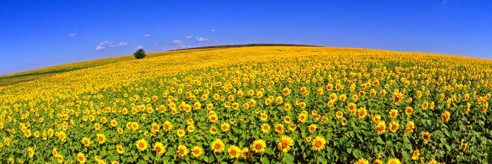

| Україна — моя Батьківщина | Моя Україна | Моя країна-найкраща у світі |
Мальовнича моя Україна
| Карпати | Петрашківський розпис | Поділля | Полісся | Слобожанщина |
Моя країна Україна!
Напевне, кожен із нас колись замислювався над тим, що таке рідна країна, чим вона особлива, чим вирізняється з-поміж тисяч інших країн світу. Відповісти на ці запитання непросто, адже рідна країна - це не просто клапоть землі на планеті, де живеш, навчаєшся, працюєш, створюєш сім’ю, — це щось значно більше, це почуття, які виникають до цього «клаптя», це бажання діяти на його благо, повага до нього. Я можу впевнено сказати, що моя Україна — найкраща країна у світі. Та чи маю я підстави стверджувати це так категорично? Що ж таке моя країна? І чому вона найкраща для мене? Україна — це славетна історія: мудрі літописці, Київ священний, дзвін козацьких шабель, гайдамацький посвист, нескінченні чумацькі шляхи, зойк кріпака на панському дворі, революційні заграви, довгоочікувана незалежність…
Україна — це чарівна природа: високі гори й неосяжні степи, плодючі чорноземи, тополя у волошковому полі, хрущі над вишнями, калина у дворі, п’янкі любисток і м’ята, верба край дороги, жовтогарячі соняшники на струнких стеблах…
Україна — це неповторна культура: ніжна лірична пісня, героїчна, сповнена патріотизму дума, вишитий рушник на покуті, розмальована святкова писанка, мова солов’їна…
Можна довго перераховувати все, чим для мене є моя країна, та чи буде тому край? Україна — це все, іцо навколо мене, усе, чим живу й про що мрію, це мої батьки, друзі, учителі. Кожен порух моєї душі, кожен мій вчинок, кожен життєвий крок стосуються моєї країни.
Однак головне, що Україна — це та земля, де я народився, де завжди на мене чекатиме батьківська домівка, зігріта теплим родинним затишком, добротою та материнською ласкою, це — моя Батьківщина, найкраща і найрід-ніша, завжди захоплива у своїй непізнаності й навіть непізнанності.
Україно! Ти для мене диво!
І нехай пливе за роком рік,
Буду, мамо, горда і вродлива,
З тебе дивуватися повік.
Ці поетичні рядки належать В. Симоненку, відданому співцеві своєї країни, який завжди із захопленням і ніжністю відгукувався про Україну. Саме він автор слів, які знає кожен із нас:
Можна все на світі вибирати, сину,
Вибрати не можна тільки Батьківщину.